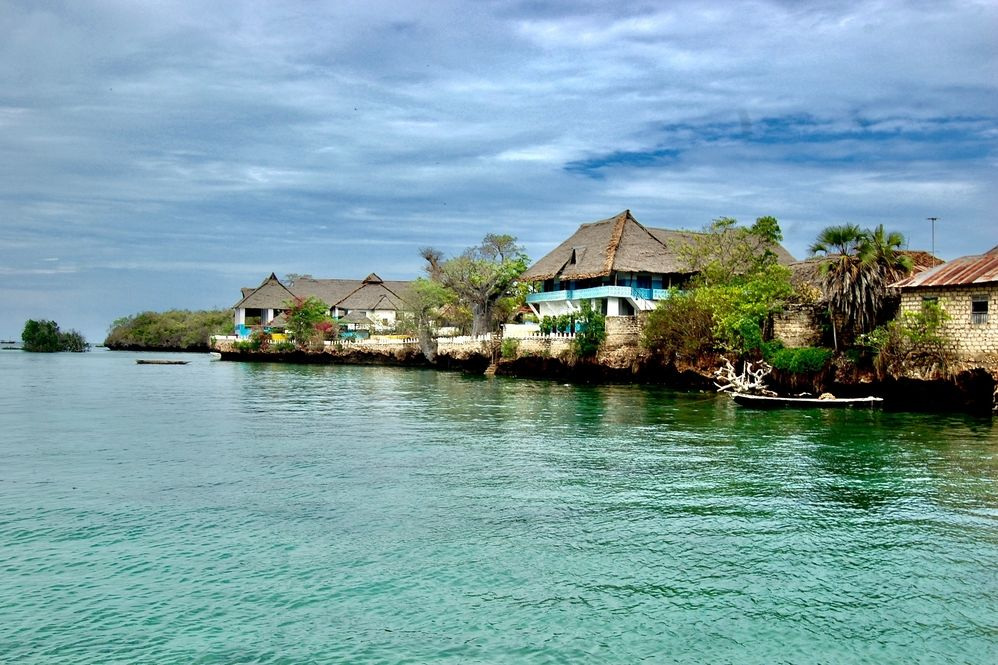
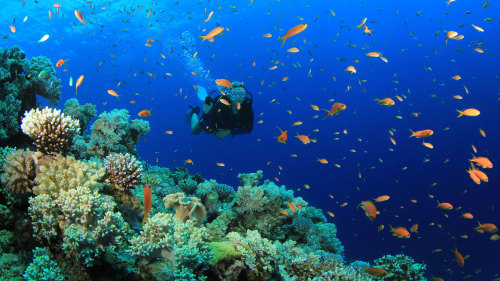

| 1 | This 5 square kilometer island is named after the Chinese- called wa-Cini in Swahili. |
| 2 | The Chinese used to visit it regularly to trade porcelain with mangrove poles and other local products. |
| 3 | Here tourists do snorkel and dive between the coral around this tiny sand island Kisite which is totally inundated during high tide. |
| 4 | There are no cars, carts or bicycles. Cargo is transported by foot or by a wheelbarrow with a solid tyre. Transport is over the paths, or via the beaches, mainly consisting of coral and only passable with low tide, or by boat over the sea. |
| 5 | The island has a population of about 3,000 living at the north coast in the two villages Wasini and Mkwiro, respectively at the west and east side of the island, and inland in the hamlet Nyuma Maji, which means in Swahili 'behind the water'. |


